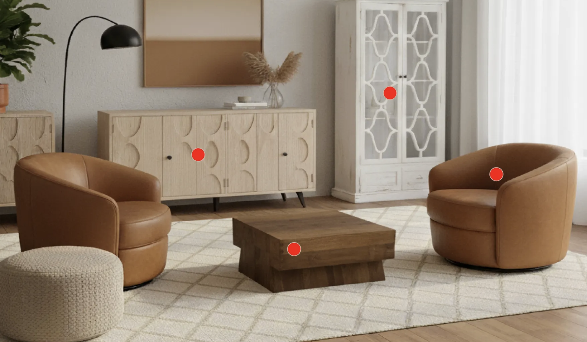

Sprint 1: Redesigning Knotty and Board for Multiple Dimensions
View Full Post Here Overview
For Design Sprint 1, our team was tasked with reimagining the Knotty & Board website, a local home furnishings company in Davidson. We were asked to ideate designs for three distinct device contexts: a smartwatch, a laptop, and a large multi-touch display. We were not only asked to resize content to fit different screen sizes. Rather, we were challenged to rethink the user experience from the ground up, tailoring each design to the unique needs of the user and their devices. Our goal was to make not only a responsive and aesthetically pleasing site, but also one designed for the specific needs, behaviors and expectations of different user groups across these devices. We began by defining a target demographic and analyzing their priorities as a team. We then took these insights to briefly sketch out and ideate examples of potential designs. We then continued by constructing cleaner paper prototypes for that screen and presented these for feedback, and based on this feedback, created Figma prototypes of these redesigned screen experiences.
Target User Group
We came together as a group to center on a grounded user group. Using our contextual knowledge of the greater Davidson-Cornelius area where each Knotty and Board store is based, we came up with distinct user profiles to create a diverse and demographically grounded user group.
- Older adults who may be less technologically fluent but value quality furnishings and in-person shopping
- Younger families and professionals (eg. Davidson professors) who are budget-conscious and interested in custom pieces of furniture
- Realtors and home stagers seeking stylish, high-end furniture to prepare houses for sale.
We sketched initial personas in class to explore these users’ goals, tech fluency, and aesthetic preferences.
- Robert (Ellora): A 27-year-old renter who values aesthetics but lacks a clear design vision. He’s looking for cohesive sets and is sensitive to shipping costs and financing options.
- Kelly (Chetna): A retired woman with disposable income and a strong sense of style. She’s willing to pay for assembly and values customization, but may be less comfortable with complex online interfaces.
- Paul (Jay): A 35-year-old homeowner who knows what he wants stylistically and is budget-conscious. He’s interested in custom pieces but also pays attention to financing and shipping logistics.
We noted differences between each persona. There were gaps in physical access and age for Robert and Paul versus Kelly’s abilities as a retired woman. We acknowledged that these discrepancies would affect their ability to assemble items and pick up furniture. We also noticed differences between Kelly and Paul, who knew their design and aesthetic visions, as opposed to Robert, who was looking for a predetermined furniture set or something that could be pre-assessed as looking good together.
Despite their differences in age, access and design fluencies, there were commonalities within these personas. We noticed specifically that these personas shared a common hesitation around the online shopping experience. Each of our personas struggled with trusting product quality and financing transparency, preferring in person experiences to online devices. They all expressed frustration with returns and tech navigation–this issue was exacerbated by specific characteristics, such as Kelly’s age and lack of technology prowess. Additionally, all our personas expressed concerns about delivery, vehicle access and self assembly. On an aesthetic level, Paul and Kelly care about customization while everyone care about saving money.
Summarize User Needs and Priorities
Across our target group, we identified several shared needs:
- Visualizing products before visiting the store: Users want to browse offerings online, especially custom upholstery and high-end pieces.
- Understanding financing options: Many users are money-conscious or curious about payment plans, especially for larger purchases.
- Navigating with ease across devices: Older users may need onboarding cues, while younger users expect intuitive, responsive layouts.
- Accessing clear calls-to-action: Whether purchasing, booking consultations, or exploring customization, clickable elements must be obvious and accessible.
We prioritized clarity, emotional resonance, and accessibility — tailoring each design to the device’s affordances and the user’s context.
Design Goals and Page Selection Rationale
We chose to redesign two key pages across all three screen sizes. We focused on both our user priorities, our own personal pain points on the website, and the business potential of the site.
- Homepage: This is the highest traffic point on the site and sets the tone for the brand. It must quickly communicate offerings, style, and navigation paths. We noticed that throughout the homepage, there were many links to various domains that could be confusing to the user, as they were not easily navigable. Additionally, we thought that there could be a lot of improvements on the organization of the header and footer for the overall site.
- Financing Page: This page felt underutilized in the original site but offers a strategic opportunity to support user decisionmaking. Knotty and Board offers a very unique opportunity that we thought could be better displayed on the site. By making financing options more transparent and approachable, we aimed to reduce stress and friction for high-value purchases.
Sketching & Ideation
Each member of our group sketched out lo-fidelity, highly iterative ideas for each screen size after meeting together.
Smartwatch
With limited space, we prioritized simple navigation and readability. The homepage offered quick CTAs to explore furniture or interior design based on the store, along with store details and maps integration. The financing flow used expandable windows so that the user could click in and out of menus easily.
Fig 1 is a sketch for the homepage on the Apple Watch. It includes the main information from the website and introduces the idea of a toggleable navigation bar with the three-line menu, which is a strong feature. However, the overall interface feels cluttered. Given the limited screen size of a smartwatch, it became clear that including too many images and blocks of text was not practical.
We also considered the user’s intent: most people are unlikely to use a smartwatch to shop, explore the brand, or purchase gift cards. While having links to social channels could be useful, the inclusion of features like alternating image-and-text sections only added unnecessary complexity.
Ultimately, we determined that this design was not user-friendly for the platform and decided not to move forward with it.
Desktop
The desktop layout emphasized structured navigation and content depth. I edited the full header to specify important links such as “Explore,” “About Us,” and “Financing,” as well as emphasizing the location and store hours of the two separate stores. The financing page emphasized the textual information in a neater and cleaner way.
Fig 2 is one of our initial sketches for the homepage in the laptop dimension. It incorporates the same core ideas from the current homepage but introduces a few adjustments. For example, we experimented with placing text before the image and adding more information about the store locations.
Through this iteration, we identified several issues. First, the space allocated for images feels too limited — if anything, the image should take priority over the text to better highlight the brand’s aesthetic. Additionally, the navigation section contains too many words and appears small, which may hinder usability.
That said, this sketch does succeed in clearly conveying one of the key messages from the original website: the existence of two distinct locations. This remains a critical element to communicate, and this design makes that message more apparent.
Large Screen
We expanded upon the desktop flow we laid out for the large screen. We moved the header to the side for easier access and included more interesting visual content such as animation.
Fig 3’s financial sketch is designed for the smart screen with a simple, streamlined layout. It places strong emphasis on 0% interest financing as well as customer testimonials. While highlighting testimonials is a good idea — since they share real customer experiences and build trust, especially for a small business — the amount of space they occupy in this design feels excessive.
Another consideration is the page title. Rather than leading with “0% Interest,” it would be more effective and professional to use a title such as “Financing” and emphasize the 0% interest offer within the content. This way, the focus on interest rates is still clear, but framed within a broader, more structured context.
We agreed that the 0% emphasis is important but should be conveyed in a more subtle and design-oriented way — such as through bolding, italicizing, or strategic placement — instead of dominating the entire page.
Click here to view full article